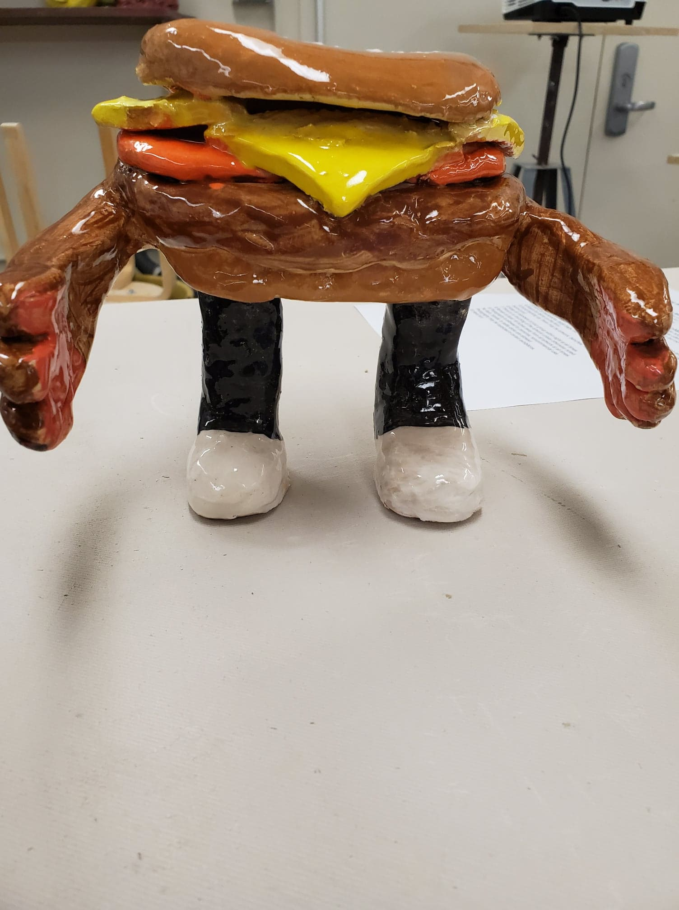
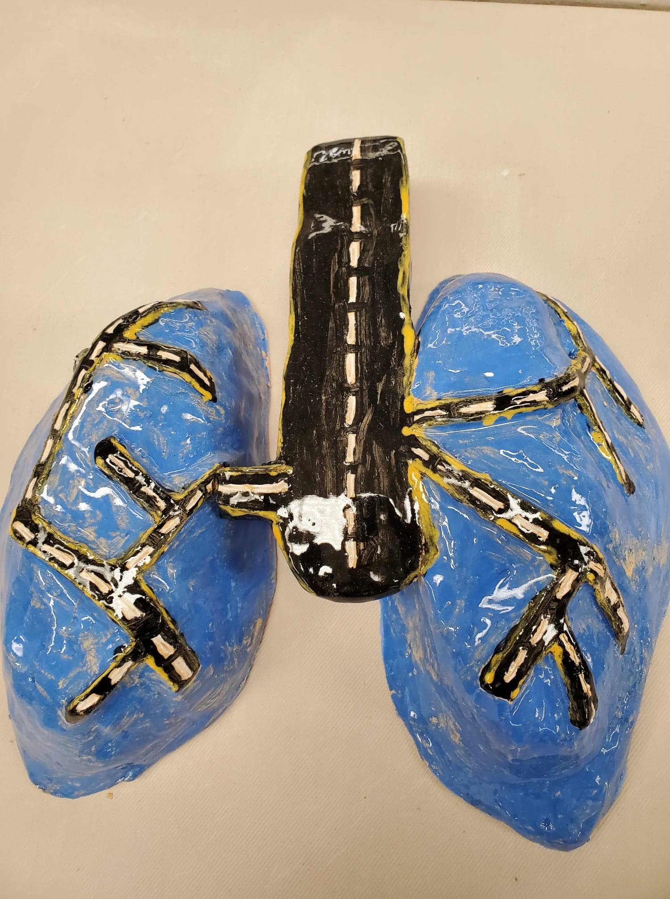
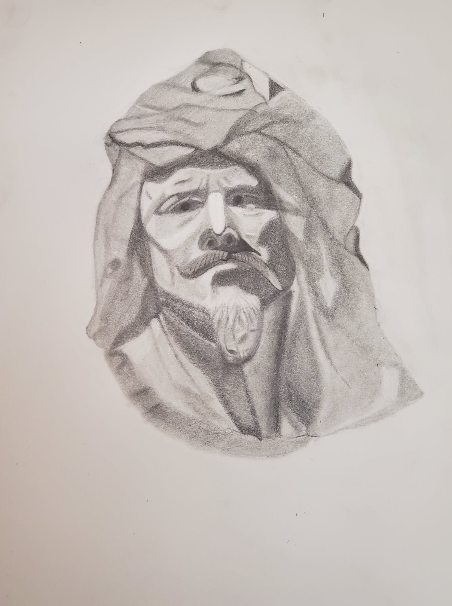

My Artworks
Burger Man
This project was inspired by a movie called Sausage Part where all the foods turn into living things. So, I choose burger which is the most common food and added arms and legs to make it a living thing. Adding, arms was the most difficult thing to do as the clay would not stick to the bun properly. But the final piece came out to be what I expected. There is something about this piece that always makes me laugh.
- Jun 2019
Lungs Road
This was a project called organic and inorganic. So, I used the lungs as organic and made roads as the veins for the lungs to create an inorganic object. This project took a lot of brainstorming as I wasn't sure which part of the body to use. Also, what to choose for my inorganic. Then it just hit me while I was looking at the pictures of lungs to make a road as the veins of the lungs. Similarly, the choice of color also has the meaning as the blue color symbolizes the oceans and black and yellow as the road.
- Jun 2019
Look Into My EYE
This is a project where I drew a portrait of a bust. Out of five different busts, this particular bust caught my attention so, I decided to draw it. At first glance, the bust of the person looked very tough. But when I started to draw and look more and more into the bust, I felt sad for the bust. It looked to me as a lonely person especially since its eyes tell me that the person is unhappy and gloomy.
-Nov 2019